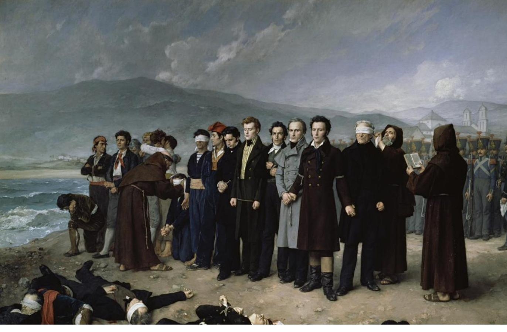
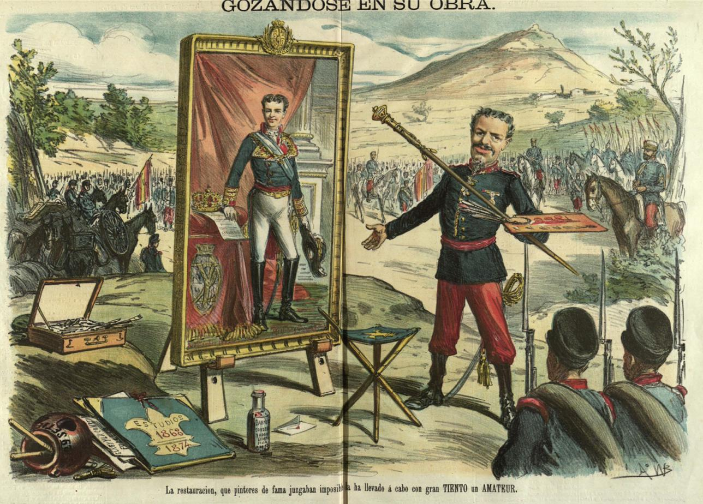
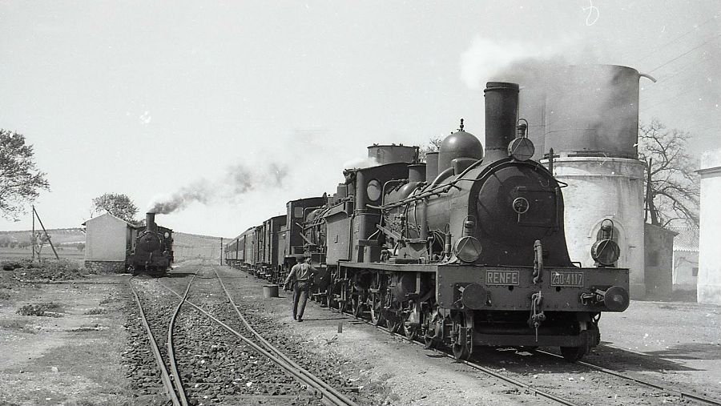
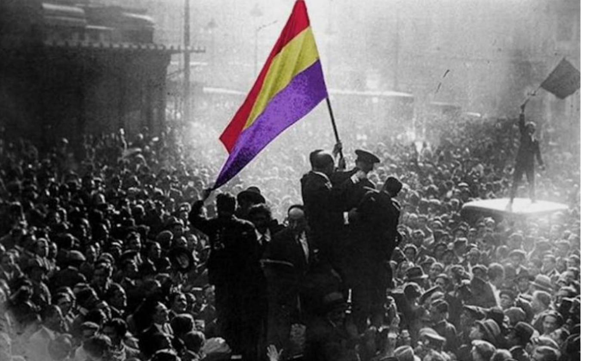
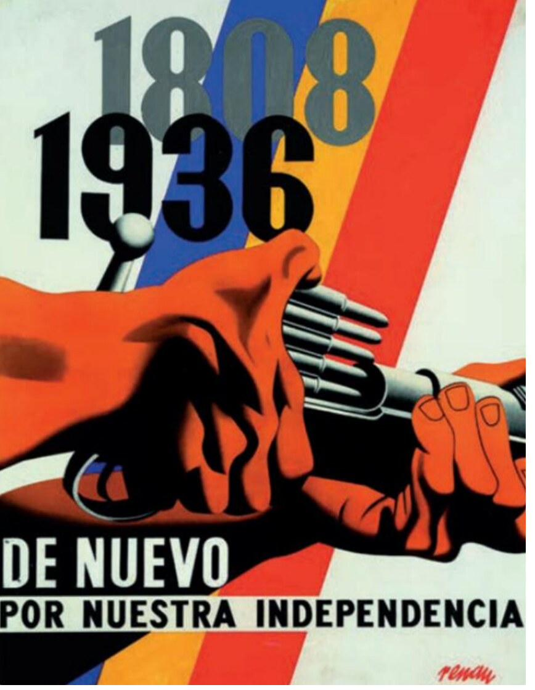
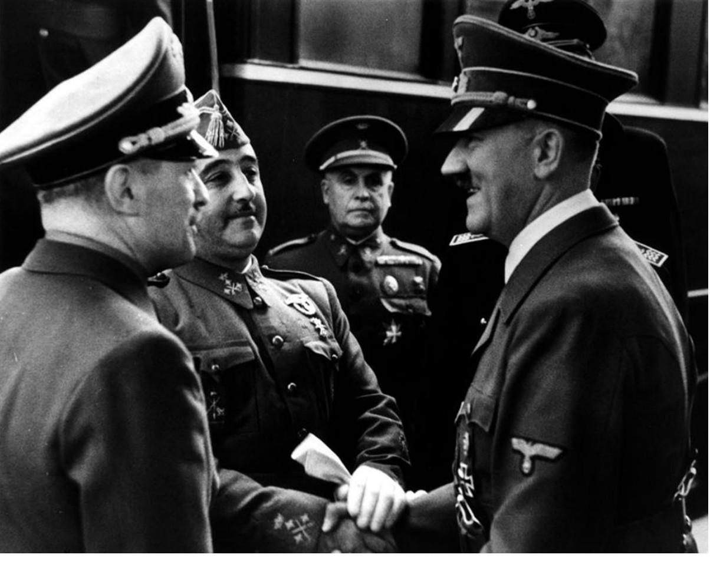
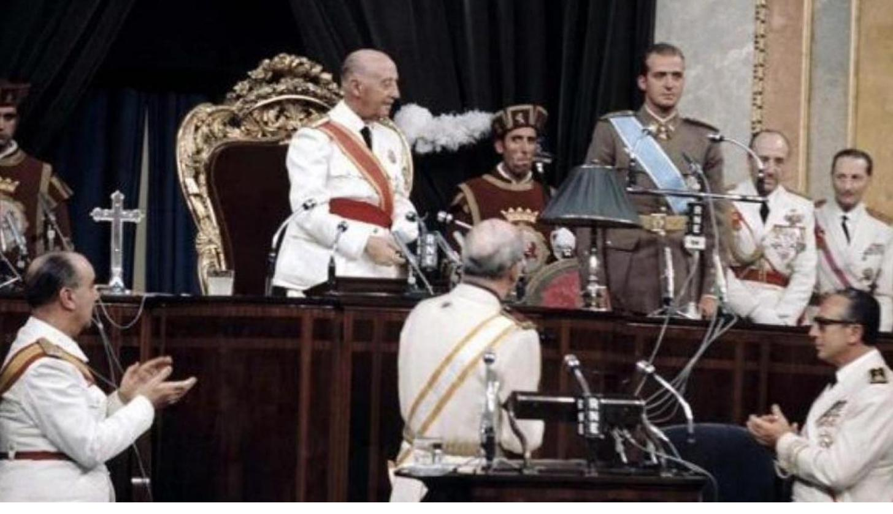

I
Crisis del Antiguo Régimen y construcción del Estado liberal
1808 – 1902
01
Unidad 1 · 1808–1833
El Fin del Antiguo Régimen
Abrir expediente →02
Unidad 2 · 1833–1868
El Reinado de Isabel II
Abrir expediente →
03
Unidad 3 · 1868–1902
Sexenio Revolucionario y Restauración
Abrir expediente →
04
Unidad 4 · Siglo XIX
Transformaciones Económicas y Sociales
Abrir expediente →
II
La Restauración en crisis: el reinado de Alfonso XIII
1898 – 1931
III
República, Guerra Civil y dictadura franquista
1931 – 1975
07
Unidad 7 · 1931–1936
La Segunda República
Abrir expediente →
08
Unidad 8 · 1936–1939
Golpe de Estado, Revolución y Guerra Civil
Abrir expediente →
09
Unidad 9 · 1939–1959
La Dictadura Franquista y la Posguerra
Abrir expediente →
10
Unidad 10 · 1959–1975
De la Consolidación al Final del Franquismo
Abrir expediente →
IV